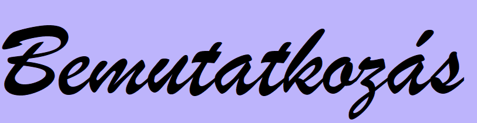

Születési idő:
2020.06.02.
Tanulmányok:
2007-2015 : Kőrösi Csoma Sándor Általános Iskola
2015-2020 : Budapest XX. Kerületi Kossuth Lajos Gimnázium
2020- : Budapesti Műszaki és Gazdaságtudományi Egyetem
Nyelvismeret:
angol (B2 komplex nyelvvizsga)
német (DSDII nyelvvizsga)
Egy kicsit magamról...:
Annak ellenére, hogy nyelvi osztályba jártam általános iskolában és gimnáziumban is, már egészen kicsiként tudtam, hogy mégis a reál tárgyak érdekelnek jobban, és idővel valami ezzel kapcsolatosat szeretnék tanulni. Ennek ellenére egyáltalán nem bántam meg, hogy korábban inkább a nyelvekre fektettem a hangsúlyt. Mindig volt lehetőségem általános iskolában informatikából, gimnáziumban matematikából plusz órákra járni, és így egészen gimnázium végéig volt időm eldönteni, hogy mégis mit szeretnék a továbbiakban tanulni.
Szeretem a hosszabb kirándulásokat a természetben, új helyeket felfedezni. Amikor lehetőségem adódik, szívesen utazgatok, főleg Magyarországon belül. Úgy gondolom, hogy itt is csodálatos helyeket lehet felfedezni, anélkül, hogy akár egy teljes napot utazással kéne tölteni. Természetesen későbbiekben szívesen utaznék külföldre is, hogy különböző kultúrákat is megismerhessek.
Persze az utóbbi karanténos helyzetben ezt a hobbimat sajnos mellőzni kellett, így inkább más elfoglaltságokat kerestem, ami kiszakíthat a monoton hétköznapokból; sokszor sütök, főzök. Izgalmasnak tartom az új receptek kipróbálását, új trükkök elsajáttását.